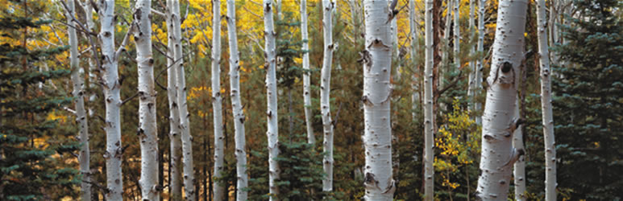
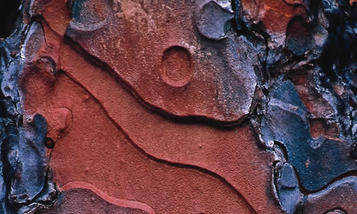
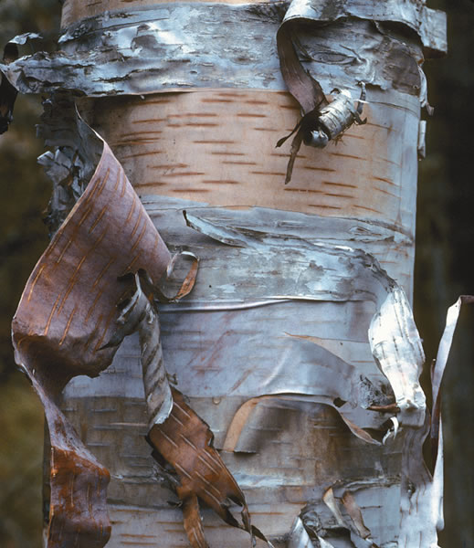
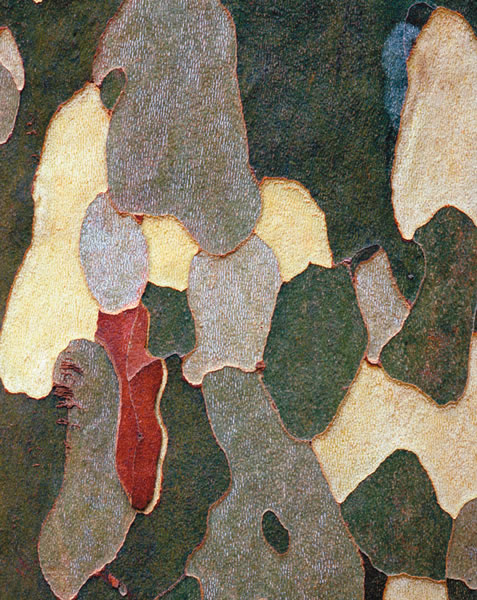
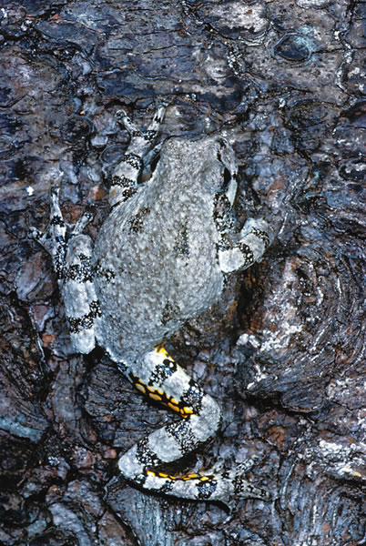
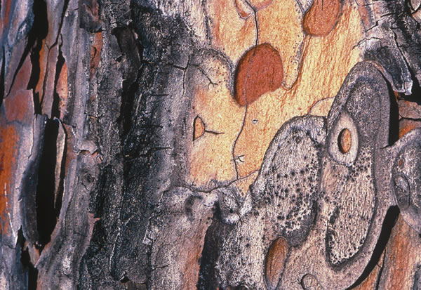
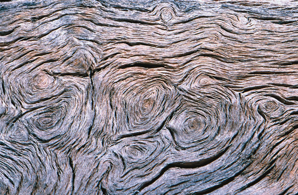
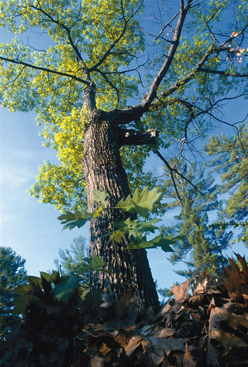

Bark Is Beautiful
Remarkable for its visual diversity, this biological marvel also protects and nourishes trees, animals and humans.
By Terry Krautwurst
February/March 2006
Here it is, the season of same-old-same-old: same old freezing rain, same old snow, same old chill winds, gray skies and barren, shivering timbers. In most parts of the country, it is the season of bleak landscapes, of nature-in-waiting for brighter days.
Or so it would seem. In some cases, winters apparent bleakness is only an illusion, self-induced by our tendency to overlook the beauty in the obvious, the everyday, the right-there-in-front-of-our-noses. Take, for example, those barren, shivering timbers I mentioned. True, the deciduous trees outside our windows are void of their lush summer greenery, their bare branches etching the skyline like long, stark, bony fingers.
But wait a minute: Grab a hat and coat, pull on some boots, go outdoors and take a closer look at those trees no, not at whats not there (leaves, fruit, flowers and seeds), but at the natural wonder that cradles, nourishes and protects every tree throughout its lifetime: bark.
Confounding Diversity
There certainly are exceptions to the notion that the world of tree bark isnt showy or colorful. Some trees have emphatically bright-hued barks that stand out in the landscape: the white-lined, emerald-green bark of the striped maple; the striking metallic sheen of the yellow birch; the startlingly ivory, black-scribed trunk of the white birch, its wispy bark peeling back in thin ribbons to reveal creamier layers below.
But its form, not flash, that mostly makes our trees bark so extraordinary. Stand in a winter woodlot and look around, and at first glance youll notice not much more variety than subtle differences in shades of gray and brown. But if you move closer and spend some time examining each tree, youll discover an astounding diversity of bark patterns and textures: rough or silky smooth, thick or thin plated, furrowed or peeling, wavy or straight lined, ribbed or ridged, cracked or bumpy.
That diversity, in fact, is not only astounding, but confounding. Not even botanists can consistently rely on bark alone to identify a trees species. In some cases, a positive identification is simple enough, because the bark is truly distinctive or unique: shagbark hickorys long, peeling, shedding strips; the sycamores light-green, gray and brown exfoliated patches. In other cases, bark can help you distinguish one broad category from another a maple from a birch, for instance. But identifying exactly which species of maple or birch on the basis of bark alone can be a different matter.
Whats more, from a trees days as a young sprout to its demise from old age, disease, mishap or the hand of man, its bark changes many times. Some of those changes are mere matters of maturation; as the tree grows older, its bark may become lighter or darker, thicker or rougher, or more distinctively patterned.
But a trees bark is also influenced by outside forces unique to that particular plants lifetime: the soil in which it grows; the moisture it receives; the amount of wind and sun exposure; the overall climate; the animals, insects, fungi and other flora that feed or live upon it. So it is that, after a few years, the bark of every individual tree, though sharing basic botanic characteristics with others of its species, is as unique as a fingerprint.
More Than Skin Deep
Its remarkable diversity in texture, color and form is only half the story of barks beauty; the other half lies deeper, in its vital functions. To put it simply: no bark, no trees.
Most of us think of bark as a trees outer protective shell, covering the wood inside. Well, were right about that, but bark is far more than just a tough skin. Botanically speaking, bark consists of multiple layers of tissues that together make up the inner bark and the outer bark. Combined, the two layers of bark which in some species can reach more than 2 feet into the tree provide protection and deliver essential nutrients and life support.
In its infancy, a seedling trees stem is wrapped in a fragile outer skin, the epidermis. At its tip and the ends of its roots, the stem adds new cells and lengthens thus the seedling grows taller. Meanwhile, cells in a layer of the stems inner tissue, called the vascular cambium, divide on both sides of this tissue, producing wood cells (xylem) on the inside and a variety of cell types (phloem) toward the outside, widening the tree.
The vascular cambium produces far more new cells toward the inside than the outside, so the wood becomes thicker faster than the outer layer. If this were to continue for long, the little trees trunk would literally grow out of its skin, bursting the epidermis.
Instead, the outer tissues form a new layer of cells around the stem, just beneath the epidermis, called the cork cambium. This layer, like the vascular cambium, also generates new cells on both sides, but produces most of its new cells cork cells toward the outside. This is the trees initial layer of outer bark, which replaces the young plants thin epidermis with a tough layer of waxy, air-filled cork cells. As the outer bark thickens, the oldest cork cells die and toughen, creating a shell that insulates the tree from temperature extremes, keeps the plants inner tissues from losing water and presents an unappetizing barrier between the trees tender inner tissues and would-be insect invaders.
As the tree ages, more layers of cork cambium emerge and begin generating additional outer bark cells. Unlike the initial cork cambium, though, the new bark cells grow in arc-shaped patches or in overlapping patterns rather than in a continuous layer around the stem. So it is that each tree species, depending on the number, arrangement and growth characteristics of its cork cambia, produces the corky ridges, furrows, checks or cracks that are characteristic of its kind. The amount and nature of the outer bark cells are distinctive for each species, too. Some, such as cork oak, produce thick outer cork; in others, such as black locust, the outer bark is made up mostly of fiber cells that grow in deep fissured patterns. Trees with papery bark, such as birch, produce alternating layers of thick- and thin-walled cells; the fragile thin-cell layers peel or wear away, revealing the thicker layer below.
Meanwhile, a trees inner bark develops a complex structure of tubelike conductive cells that serve as the trees nutrient delivery system. Starting each spring, the tree absorbs water through its roots and conducts the mineral-rich liquid through thousands of tiny hollow vessels in the wood to the leaves above. But its the inner barks conductive cells that carry the concentrated sugars and other carbohydrates produced by photosynthesis back down through the stem and into every living cell of the tree. In hardwoods, the cells are long and strawlike, stacked end to end and connected to horizontal ray cells that distribute the liquid food to the trees innermost tissues. In the inner bark of conifers, densely packed sieve cells with minute pores in their walls pass the nutrients slowly from cell to cell.
Habitat and Highway
From an animals point of view, tree bark is anything but dead space. For some, its a roof over their heads. North American gray tree frogs and adult mourning cloak butterflies spend the entire winter beneath loose bark, semifrozen but sufficiently protected to emerge in spring full of hop and flutter. In nesting season, a mother-to-be brown creeper seeks out a dead tree with a long, peeling bark scale and builds her nest around and beneath it, raising as many as six fledglings inside the bark-covered shelter.
For countless insects beetles, moths, flies, termites, mealybugs and more bark is either home, hiding place, snack bar or all three. So closely associated are some moths and other insects with certain kinds of tree bark that theyve evolved to look like it, their bodies and wings mimicking the colors and patterns of the bark they occupy to camouflage their presence from predators. Of course, many insects beetles especially can be harmful to trees, boring into the bark and laying eggs that produce tunneling, tissue-gobbling larvae. The good news is that these same bark-invading insects turn the tree into a vertical platter for birds such as nuthatches and woodpeckers.
Other creatures use tree bark to their advantage, too. Chickadees pluck the heads off insect prey, then stuff the bug bodies beneath bark scales as snacks to be retrieved in winter. Northern flying squirrels make their nests primarily of finely shredded bark. Mice, rabbits, porcupines and deer strip away the outer bark of young trees to nibble at the nutritious inner bark.
Tree bark also serves as a conduit for all sorts of creatures seeking higher places. For squirrels, raccoons and other tree dwellers, bark is the pavement to their front doors. The rough surface of tree-bark terrain furrows, cracks, crevices gives protein-seeking snakes a foothold, making smooth-barked trees safer sites for nesting birds and animals.
Food and Medicine
Although its aesthetic beauty may escape some, we humans have long recognized tree barks usefulness. Indeed, archaeologists say, we eat the stuff up: For centuries, people from around the world have eaten tender, sugary inner tree bark for nutrition. In this country, pines, aspens, cedars and cottonwood are among the species Native Americans used in their diets, especially during winter. They would peel back the tough outer bark and carefully cut out the inner bark, leaving the vascular cambium intact to generate new growth. Tree-bark soups, breads and puddings were among the items on the menu. Dont turn up your nose too much; we still use bark in foods. For instance, cinnamon both true cinnamon and the cassia marketed in most stores as cinnamon is peeled, dried tree bark.
Another common use for bark among Native Americans was the crafting of canoes. Most tribes preferred strips of white birch bark sewn together over a frame of cedar branches using cordage made from fibrous tree roots.
Bark has played a role in our countrys industrial history, too. Resin extracted from the inner bark of conifers has long been an important source of raw material for quality varnishes and shellacs. In the Appalachians during the late 19th and early 20th centuries, countless native hemlocks were toppled and peeled by tanning factories for their high-tannin bark, the logs left lying in waste.
Of all the human uses for tree bark, though, medicine figures most prominently. Lists of traditional American tree-bark remedies are so long and varied, they read like pharmacopoeias or A-to-Z field guides to North American trees. The remedies range from the well-known (slippery elm or black cherry bark for sore throat) to the imagine-that (beech-bark tea for rheumatism; black-haw bark for hot flashes) to the outright odd (oak inner-bark tea for smelly feet).
Though some may seem merely quaint, many old-timey medicaments have become important modern therapeutic drugs. Centuries ago, the Greeks and Romans sipped a tea made by steeping willow bark to ease pain and relieve fevers; Native Americans and early settlers used the same drink to soothe sore muscles and aching heads. In the 1800s, scientists determined that the active ingredient in willow bark was salicin, a substance later synthesized as acetylsalicylic acid, better known as aspirin.
For decades, quinine extracted from the bark of cinchona trees in South America was the only known treatment for malaria. Even today, natural quinine is used to treat strains of the disease that are resistant to human-made treatments. In the 1980s, it was discovered that paclitaxel a drug produced from the bark of the Pacific yew and now marketed under the name Taxol was effective in controlling lung, breast and ovarian cancers. Unfortunately, it takes roughly 70 years for a Pacific yew to reach maturity, and stripping the bark kills the tree. In the 1990s, yew bark harvests for paclitaxel production threatened large stands of the trees. Fortunately, recent advances now allow the drug to be produced from the needles of nonendangered, cultivated yew species.
All things considered, barks healing power can even extend to the winter blahs. Look out your window at those barren trees again and drink in the cure. Bark is beautiful in many ways, from its pleasing multiplicity of form and texture, to its botanical inner workings, to its practical and in some cases life-saving human applications. It turns out we dont have to wait until leafy spring to enjoy the landscapes arboreal wonders. Barks beauty is right there for us to appreciate all year long.
|
 RIC ERGENBRIGHT Quaking aspens in Kaibab National Forest, Arizona. |
 SHIN YOSHINO/MINDEN PICTURES A moose calf strips away outer bark to feed on nutritious inner bark. |
 RUSSEL WOOD The bark of every individual tree is as unique as a fingerprint. |
|
 DWIGHT KUHN Strips of bark peel away from a white birch. |
 J. PAUL MOORE Detail of sycamore bark. |
 DWIGHT KUHN A gray tree frog blends in with bark. |
|
 JIM BRANDENBURG/MINDEN PICTURES Detail of red pine bark. |
 BRYAN E. REYNOLDS Patterns in cottonwood bark. |
 DWIGHT KUHN A seedling oak tree (foreground) grows in front of a mature oak tree. |